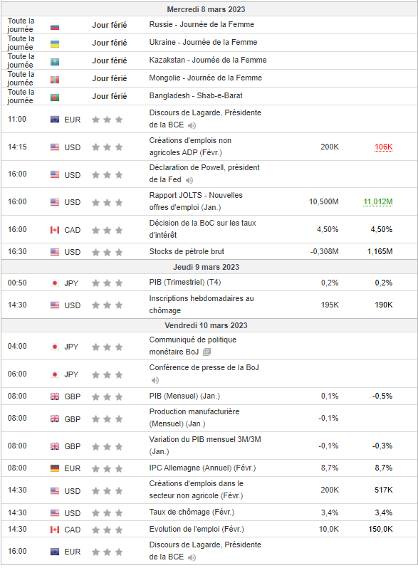

Analyse fondamentale
L'analyse fondamentale est le pillier en trading qui est le + dur à maîtriser, mais l'analyse fondamentale qu'est-ce que c'est ?
L'analyse fondamentale est la compréhension du monde économique et des facteurs macroéconomique, en d'autre terme, c'est la compréhension de ce qui ce passe dans le monde actuel, et arrivé à l'interpreter pour savoir les répercussion sur un actif
Le monde bouge tout le temps il faut donc se tenire au courant de ce qu'il se passe, des évenements majeur, pour commencer, voici un outil indispensable que chaque trader doit consulter tout les jours:

Ceci est un calendrier économique et c'est indispensable.
Qu'est-ce qu'il fait ? Il montre les annonces économiques à venir, les annonces économiques sont ce qu'on appel autrement les "data", nous avons par exemple la sortie des chiffres du PIB, de l'inflation, du taux de chômage, du taux d'interêt, etc...
Toute ces données nous intéresse pour en faire une interprétation.